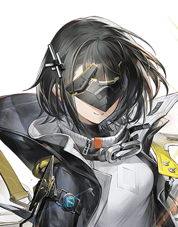
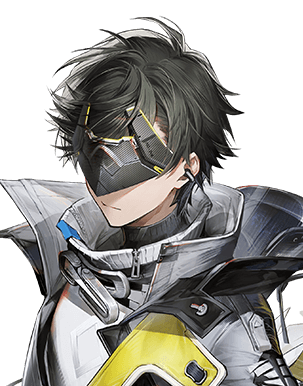

六图审阅 · natural-gloss-v2
左列为精简版，右列为完整版。所有图片均由对应 SVG 实际渲染，当前为待审计候选。
展示底色
DeepSeek
蓝发、白色褶边与侧蝴蝶结，以 r1 为主体与模式。
女管理员
齐肩层次短发、银色交错发夹；眼罩上移以露出双眼。
男管理员
不对称短发与翘束；眼罩上移，保留黑灰与黄色线索。
查看本轮参考
r1：DeepSeek 身份与光泽模式完整版整体参考
女管理员原形象
男管理员原形象 参考中的背景、水印与已指出的纹理缺陷不属于创作目标。管理员额饰上移属于本轮风格适配。